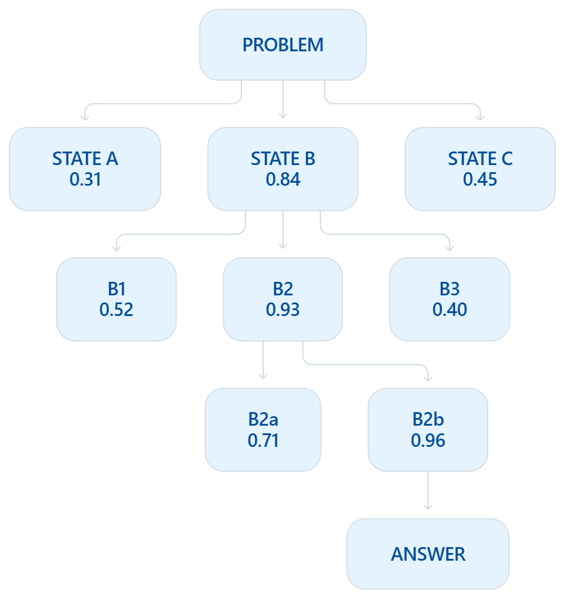
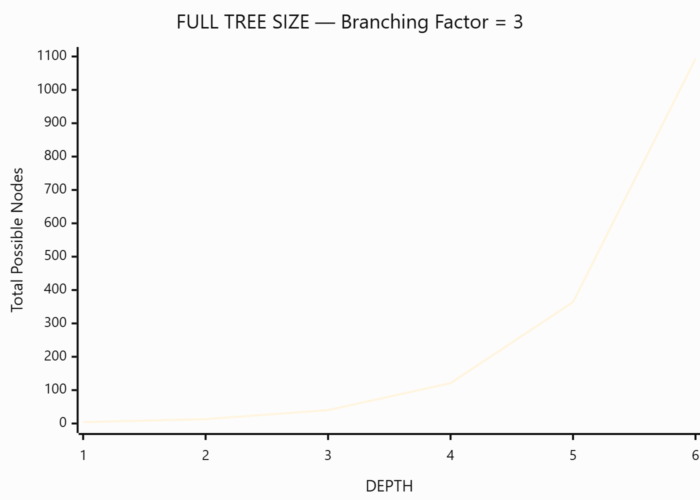
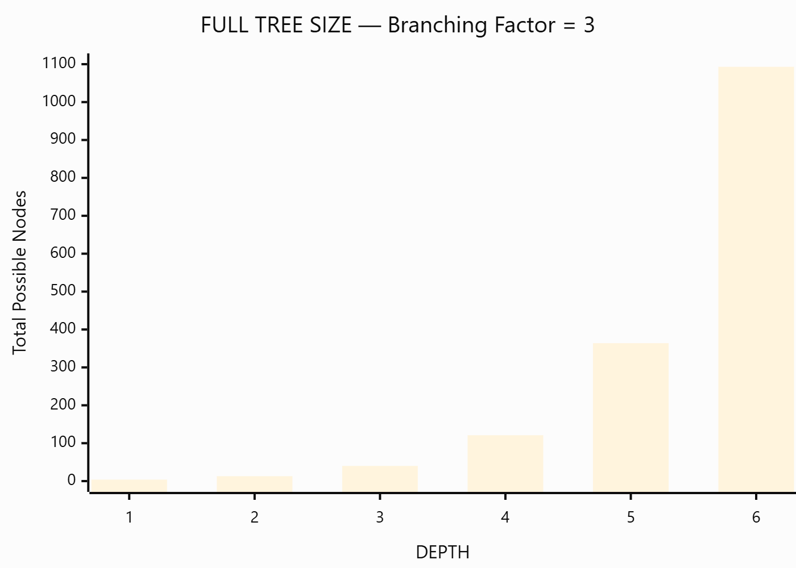
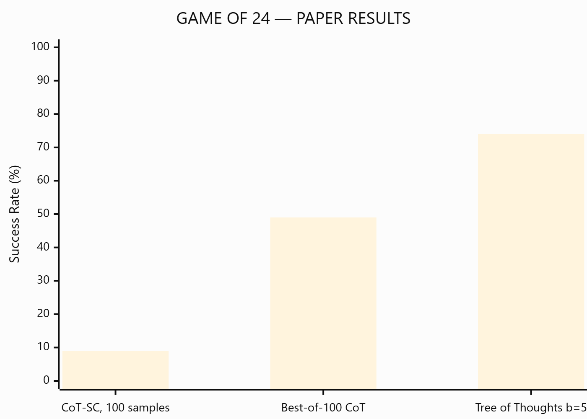
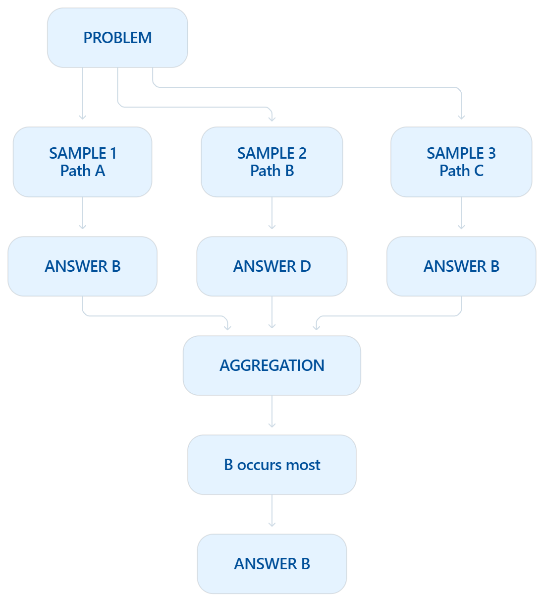
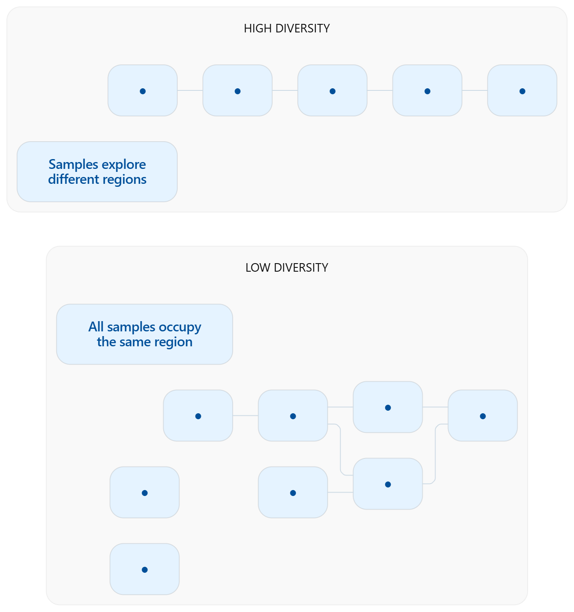
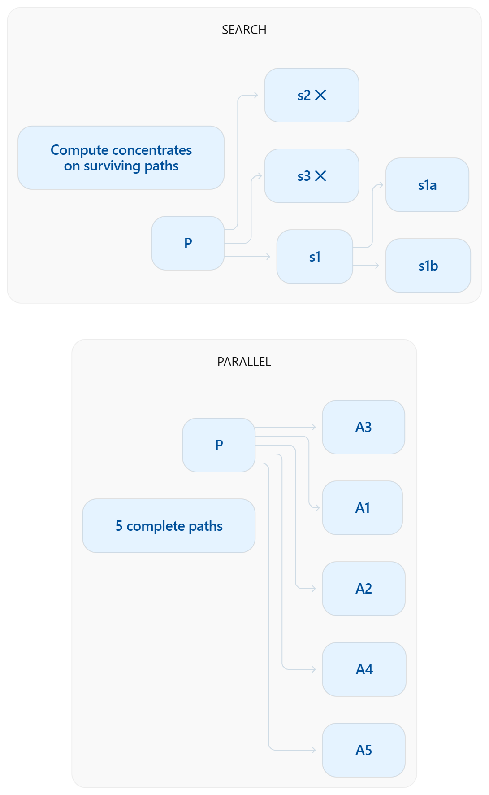
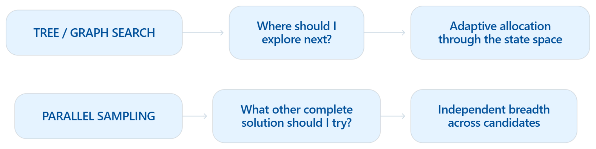

INFERENCE STRATEGY
HOW IS COMPUTE SPENT?
The model can stay fixed while the system changes how much inference-time computation is used, where that computation is allocated, and when a candidate is allowed to continue.
01 · COMPUTE ALLOCATION
Same model. Different spending plan.
At test time, producing the first possible answer does not have to end the computation.
A system can spend additional compute before committing to an output. The important question is not only how much compute is available, but where that compute goes.
One strategy spends compute inside the solution process: generate partial states, evaluate them, expand promising directions, and abandon weak ones.
Another spends compute across complete attempts: generate several independent candidate solutions, then compare or aggregate them.
Tree / Graph Searchdecide where to explore next.
Parallel Samplingdecide what other complete solution to try.
Neither requires retraining the underlying model. What changes is the organization of inference-time computation.

CHOOSE A COMPUTE POLICY
Two ways to spend extra inference compute.
TREE / GRAPH SEARCH
Spend compute inside the solution process.

02 · PARTIAL STATES
Don't wait until the end to decide.
Tree search treats reasoning as a sequence of intermediate states rather than one indivisible answer.
From the current state, the system generates several possible next steps. An evaluator estimates which states appear promising. Search then allocates additional computation to selected branches while weak branches can be pruned before they become complete answers.
Generate → Evaluate → Select → Expand
If a chosen route stops working, the system can return to an earlier decision and explore another branch.
Tree of Thoughts formalizes this idea by representing coherent intermediate “thoughts” as states and combining generation, evaluation, and classical search procedures such as breadth-first or depth-first search.
Search spends more compute where the solution currently looks promising.
03 · SEARCH-SPACE GROWTH
More depth creates more possibilities—and more waste.
Suppose every state can produce b possible next states. After d levels, the potential search space grows approximately as:
For a branching factor of only 3, going from depth 2 to depth 6 changes the full search space from 13 states to 1,093 states.
So the purpose of search is not simply to generate more reasoning. It is to avoid spending equal compute everywhere.
A useful evaluator lets the system concentrate computation on a small subset of the possible state space.
Can it generate useful possibilities?
Can it recognize which possibilities deserve more compute?



04 · GRAPH REASONING
Reasoning does not always form a tree.
In a tree, every state belongs to one path. But two different reasoning paths may discover information that should be combined.
A graph representation allows states to have multiple dependencies. Separate candidates can merge into a new state, an earlier result can be refined, and information discovered in one branch can influence another.
Graph of Thoughts generalizes tree-structured reasoning by allowing arbitrary dependencies between reasoning units, including aggregation and feedback loops.
Tree Search explores alternatives.Graph Search can also reconnect what those alternatives discover.
This distinction gives “graph” a concrete role rather than treating Tree / Graph Search as one interchangeable phrase.
05 · TARGETED COMPUTE
The same compute is not equally useful everywhere.
Consider a problem where one wrong early decision makes everything downstream invalid.
Generating 100 complete answers means paying for 100 trajectories—even when many became hopeless near the beginning. Search can instead score a partial trajectory, terminate it early, and move the remaining computation elsewhere.
The Game of 24 experiments in Tree of Thoughts are a concrete example. In that experiment, the reported success rate was 74% for ToT with breadth 5, compared with 9% for 100-sample CoT self-consistency and 49% when choosing the best of 100 CoT samples.
These numbers are task- and setup-specific. Source: Yao et al., Tree of Thoughts, Table 2.

PARALLEL SAMPLING
Spend compute across complete attempts.

06 · ANSWER-LEVEL BREADTH
Generate first. Compare later.
Parallel sampling spends additional compute by producing multiple complete candidate trajectories from the same starting problem.
Each sample explores the model's solution distribution independently or semi-independently. Only after candidates have been generated does a selection mechanism combine them.
Self-consistency follows this principle: sample diverse reasoning paths and marginalize over their final answers rather than trusting one greedy trajectory.
Search chooses between intermediate states. Sampling chooses between completed attempts.
07 · DIVERSITY
Ten attempts are useful only if they explore something new.
If every sample reproduces essentially the same trajectory, parallel generation may consume ten times the compute while gaining very little additional information.
The benefit appears when stochastic generation reveals alternative reasoning paths. Self-consistency experiments show improving performance as the number of sampled reasoning paths increased from 1 through 5, 10, 20 and 40 in their evaluated tasks.
But there is an important limitation: samples from the same model are not truly independent. They can share the same biases, miss the same evidence, or converge on the same attractive-but-wrong answer.
Empirical reference: Wang et al., Self-Consistency, Figure 2.


08 · WHERE BREADTH LIVES
Breadth can happen at different levels.
Parallel sampling spends breadth across complete responses. Search spends breadth inside the reasoning process.
This difference becomes important when a problem contains informative intermediate states. If intermediate quality can be judged reliably, search can stop wasting compute on bad trajectories.
If intermediate states are difficult to evaluate but complete outputs are easy to compare, parallel sampling may be the simpler and more robust strategy.
This is why there is no universally optimal choice. The best allocation depends on the problem difficulty, compute budget, and quality of the verifier.
Snell et al. report that the optimal test-time strategy varies with problem difficulty and inference budget rather than one strategy dominating everywhere.
09 · DIMINISHING RETURNS
Compute has diminishing—and sometimes negative—returns.
Adding inference compute only helps if the system knows how to use it.
Search can waste computation exploring low-value branches. Sampling can repeatedly reproduce correlated errors. A verifier can rank a wrong trajectory above a correct one. And excessive optimization against an imperfect evaluator can make outputs worse rather than better.
In Snell et al.'s experiments, the effectiveness of different search strategies varied with both the compute budget and estimated question difficulty; their results show regimes where allocating additional search was not the best choice.
NOT THE GOALSpend as much compute as possible.
THE GOALSpend the next unit of compute where it has the highest expected value.

SAME MODEL. SAME PROBLEM. DIFFERENT COMPUTE POLICY.